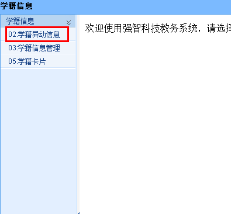

学生信息维护、学籍异动申请流程示意图
(备注：所有申请请勿重复提交！)
为保证教务管理信息系统中学籍信息的准确性，请在校生按要求完成教务管理信息系统信息维护。
需要维护的信息主要包括学生个人信息（如政治面貌等），学生学籍异动信息（如转专业、休学、复学等）。
系统提示：关于浏览器兼容的解决办法，如果是win7或者IE浏览器版本超过IE8，请进入教务系统后按F12，浏览器模式选择IE8。
学生个人信息维护流程(信息维护时间：一般为每学期开学初前4周)
- 登录系统，点击“学籍信息”，选择“学籍信息管理”，如下图。
- 点击左上角“增加”，如下图。
- 进入“信息修改”页面后，对需要维护的信息进行维护即可，修改完毕后请点击“保存”即可提交修改信息。
说明：姓名、性别、出生日期、身份证号（即证件号）、民族为锁定状态，不可在线申请修改。如果有变化，请联系学籍管理科。

学生学籍异动申请流程(异动申请时间：一般为每学期开学初前6周)
- 登录系统，点击“学籍信息”，选择“学籍异动信息”，如下图。

- 点击左上角“申请异动”，如下图。
- 进入“增加异动”页面后，如下图。
- 如上图，“学生当前情况”这部分不需更改。
- “异动后情况”中，“异动类别” 从下拉项里根据异动实际类别选择，如“转专业”、“降级”等。
- “异动原因”从下拉项里选择异动实际原因，如“成绩太差”等。
- “异动日期”和“生效日期”为默认日期。
- “院系名称”、“所在年级”、“专业名称”、“班级名称”、“培养层次”、“学制”等六项信息点击“查询”后，并请在红色框内填写新专业班级，如图。
如下图，在红色框中输入“石工1201”后显示。
双击选择项，选择你的新专业班级。
- “异动文号”填写自己的学号。
- 最后，点击“保存”。
备注：休学学生不需要点“查询”按钮录入“院系名称”、“所在年级”、“专业名称”、“班级名称”、“培养层次”、“学制”等信息，直接在“异动文号”里填写学号后，点“保存”即可。
请同学们在规定时间内完成申请，否则产生课表，选课，注册错误等问题，由学生自己承担。